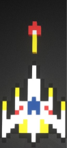
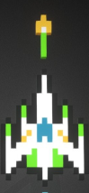
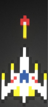
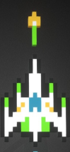

Galaga is een klassieke arcade-shooter die in 1981 werd uitgebracht door Namco.
In het spel bestuur je een ruimteschip dat moet vechten tegen golven
van vijandelijke buitenaardse wezens. Deze vijanden vliegen in formatie
en vallen het schip aan met kogels en kamikaze-aanvallen.
Een kenmerkend element is dat je schip door een "boss" vijand gevangen kan worden,
waarna je het kunt bevrijden en met twee schepen tegelijk kunt schieten
Het spel is bekend om zijn snelle gameplay, iconische geluidseffecten
en blijft een van de populairste retro-arcadegames.
Galaga is een computerspel dat
werd ontwikkeld en uitgebracht door Namacp
Het spel werd in 1981 als arcadespel uitgebracht.
Het spel bestond uit drie Z80-processors.
In 1982 werd het spel uitgegeven voor de Commodore 64
 


